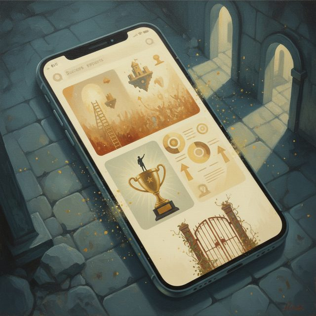
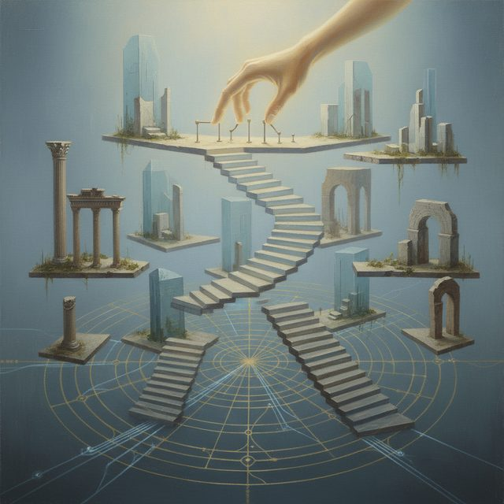
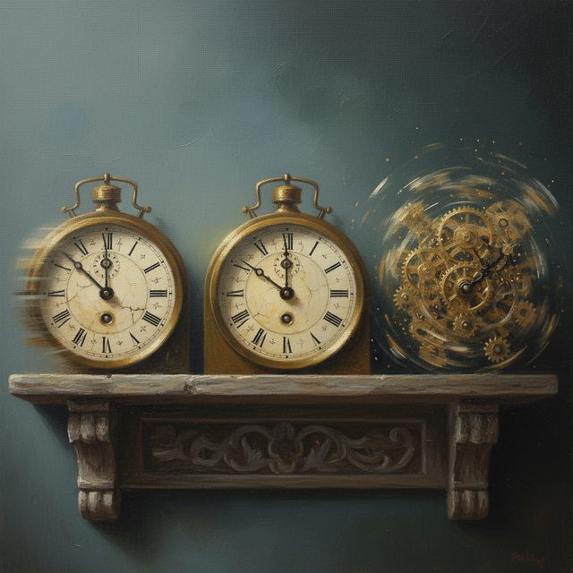
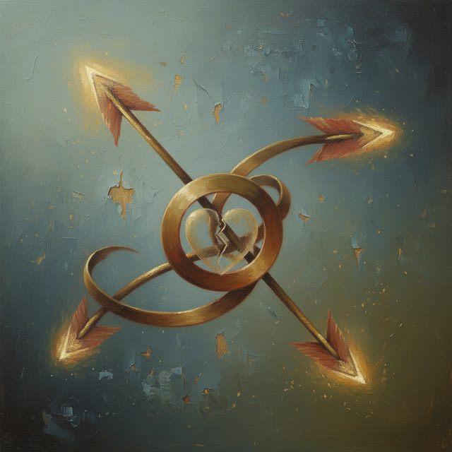
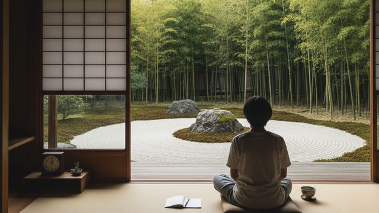
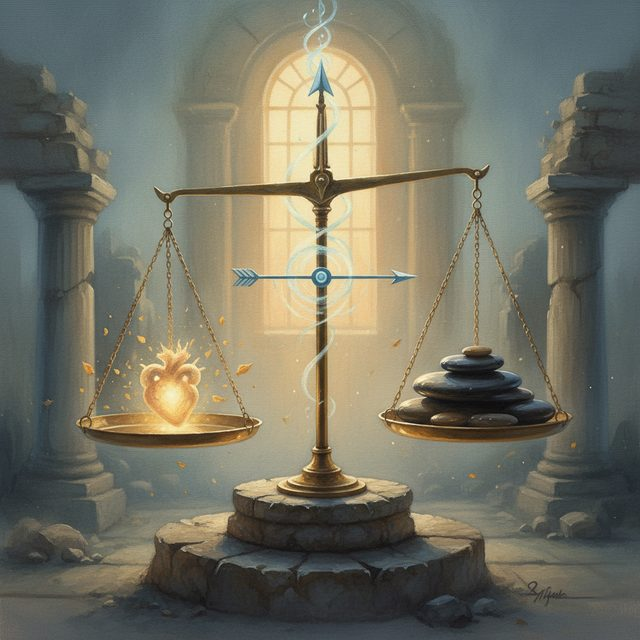
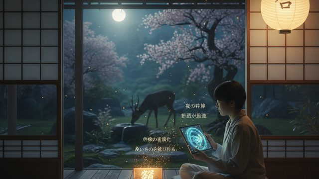

CH02-054 — images
【比較中毒】成功報告に脳が支配される理由
ep
CH02
Script Viewer
snapshot
guide
台本
音声
サムネ
画像
CH02-054
画像
updated_at: 2026-01-13T09:30:14.308996Z
run_id:
CH02-054_mix433_20260106

CH02-054
SNSの成功報告／比較の解放
CH02-054
比較の進化的根源
CH02-054
比較の歪み／断片比較の落とし穴
CH02-054
指標の混乱／指標の絞り込み
CH02-054
比較の二種類
CH02-054
比較対象の選択
CH02-054
SNSの断片性／SNSの使い方
CH02-054
自己像の硬さ

CH02-054
時間軸の比較／積み重ねの差／制御可能な視点
CH02-054
哲学的視点
CH02-054
自己肯定感と比較
CH02-054
比較の活用
CH02-054
体の緊張
CH02-054
孤立感の解消／比較の意識化

CH02-054
速度の認識
CH02-054
基準の多様性
CH02-054
過去の自己比較
CH02-054
数字以外の価値
CH02-054
内側の承認
CH02-054
比較の行動化
CH02-054
環境の変化／鏡としての他者
CH02-054
情報の断食

CH02-054
感情の方向性
CH02-054
小さな歴史

CH02-054
ペースの維持
CH02-054
比較の人間関係
CH02-054
価値観の書き出し／コンパスの比喩／比較の道具化
CH02-054
小さな変化の実践
CH02-054
ゼロサムの錯覚／協働の場のメリット
CH02-054
持っているもの

CH02-054
内側の指標
CH02-054
挑戦と成長のジレンマ／観客を絞るイメージ／評価軸の変化
CH02-054
身近な比較の苦しみ
CH02-054
焦りの調整
CH02-054
羨望の変化／遅い速度の利点
CH02-054
ステージの違い
CH02-054
弱さの共有／小さな達成
CH02-054
未来への不安
CH02-054
嫉妬の活用
CH02-054
文化的背景

CH02-054
比較の資源化／夜の比較／夜の合図／自然の触れ合い
CH02-054
比較の二面性／練習の具体例／欲望の明確化
CH02-054
時間の積み重ね
CH02-054
好奇心の窓